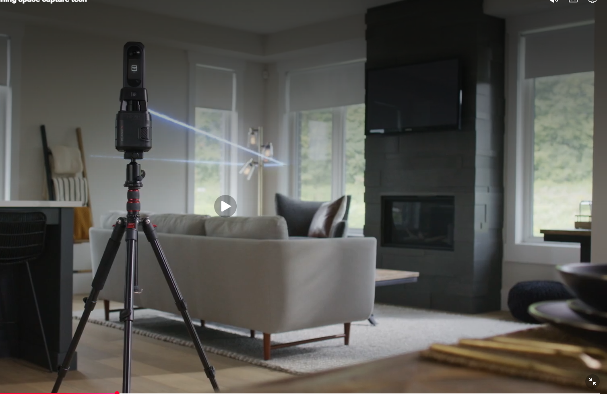
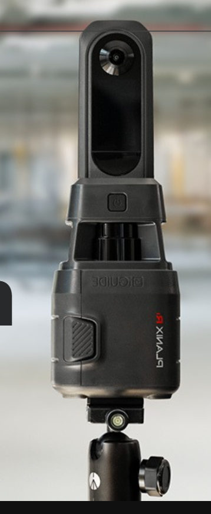

ESPACIOS REALES // SISTEMAS DIGITALES
TRANSFORMADOS
EN INTELIGENCIA
DIGITAL
Escaneo 3D, recorridos virtuales, planos, mediciones y documentación técnica con tecnología iGUIDE.
⊕ SCROLL TO EXPLORE

CAPTURING
0%
0%
POINT CLOUD
FLOOR PLANS
MEASUREMENTS
CAD / DWG
VIRTUAL TOUR
FLOOR PLANS
MEASUREMENTS
CAD / DWG
VIRTUAL TOUR
REALITY CAPTURED.
POTENTIAL UNLOCKED.
POTENTIAL UNLOCKED.
5.7150° N
72.9333° W
COLOMBIA
72.9333° W
COLOMBIA
LiDAR FIELD // LIVE
+ PRECISIÓN±1%EN MEDICIONES
+ EFICIENCIA5–7sPOR ESCANEO
+ INFORMACIÓNMÚLTIPLESENTREGABLES
+ POSIBILIDADESTODOSLOS SECTORES
LIVE DIGITAL TWIN
EXPLORA UN
PROYECTO REAL
Navega, mide, consulta el plano y descubre cómo se vive un espacio digitalizado.
ABRIR TOUR iGUIDE ↗● LIVEiGUIDE PREMIUMARQ360 // 001
UN ESCANEO.
MÚLTIPLES ENTREGABLES.
Un mismo levantamiento se convierte en información útil para vender, diseñar, documentar y operar.
◉RECORRIDO 3DExploración inmersiva
⌗PLANOS 2DDocumentación clara
⌖MEDICIONESDatos del espacio
⌁CAD / DWGFlujos técnicos
◇BIM / REVITModelado digital
⬡POINT CLOUDRealidad capturada

REALITY CAPTURE SYSTEM
PLANIX R1
CAPTURA EL MUNDO EN DETALLE
Una experiencia de captura diseñada para convertir espacios físicos en información digital útil.
◎ Cámara 360°
⌁ LiDAR
▣ Flujo de captura rápido
☁ Procesamiento digital
◇ Múltiples entregables
SOLUCIONES PARA
CADA INDUSTRIA.
La misma tecnología. Distintos problemas. Información accionable.
ARQ360 // COLOMBIA
DE LO REAL
AL MUNDO DIGITAL.
Espacios que pueden ser entendidos, medidos y aprovechados al máximo.
COLOMBIA
5.7° N // 74° W
5.7° N // 74° W